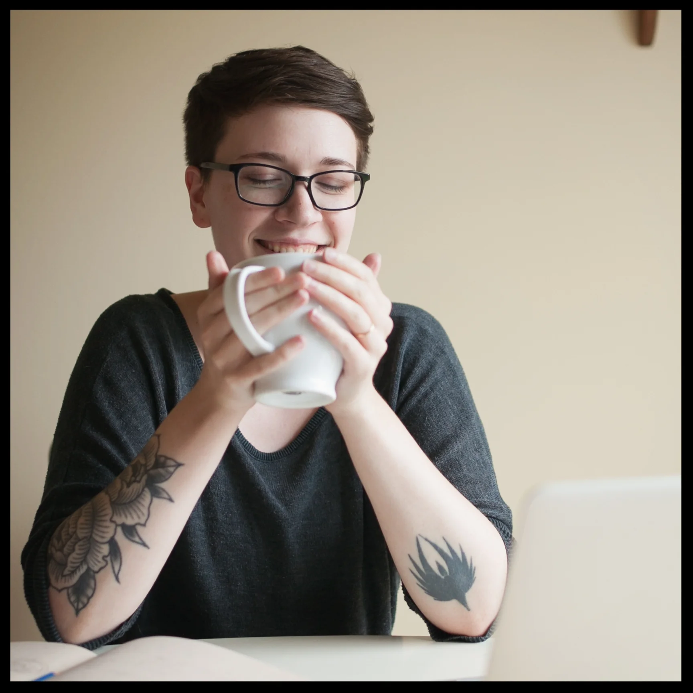

About Me
I grew up near Seattle, WA and went to school for Photography after developing a love of working in the darkroom in community college. I learned that I enjoyed the hands-on process of the darkroom more-so then taking photos and have been pursuing learning more hands-on crafts ever since.
I moved to Portland in 2010 and fell into a career in tech starting with web design and moving my way over into UX and product design. I moved to Raleigh, NC in the summer of 2022 and am currently involved in web3 product design.